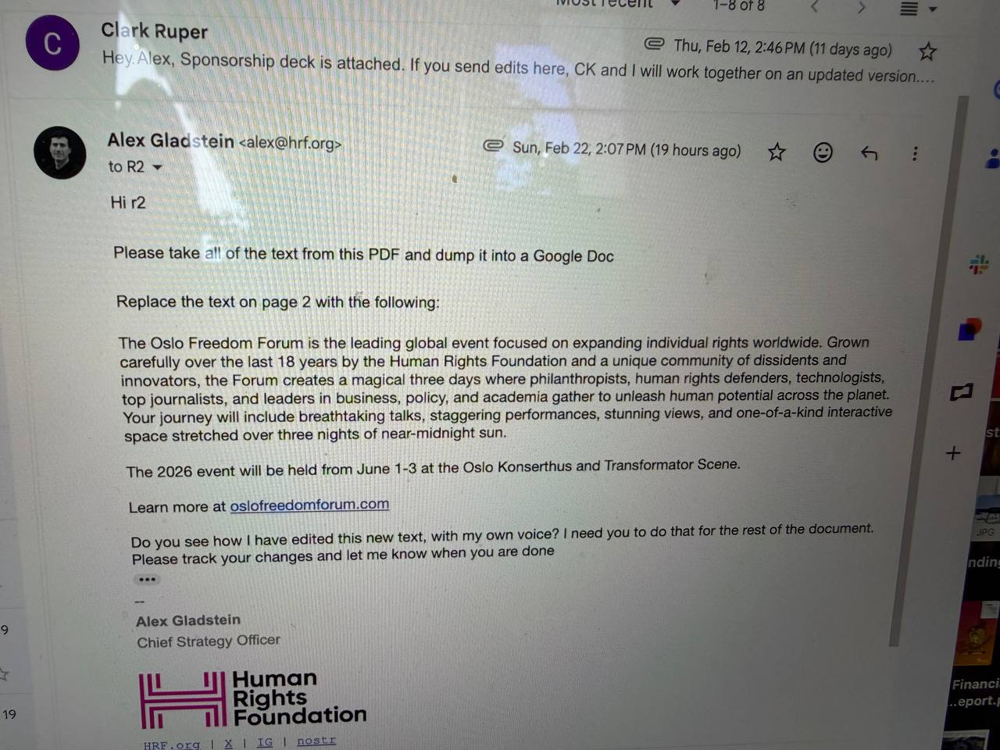
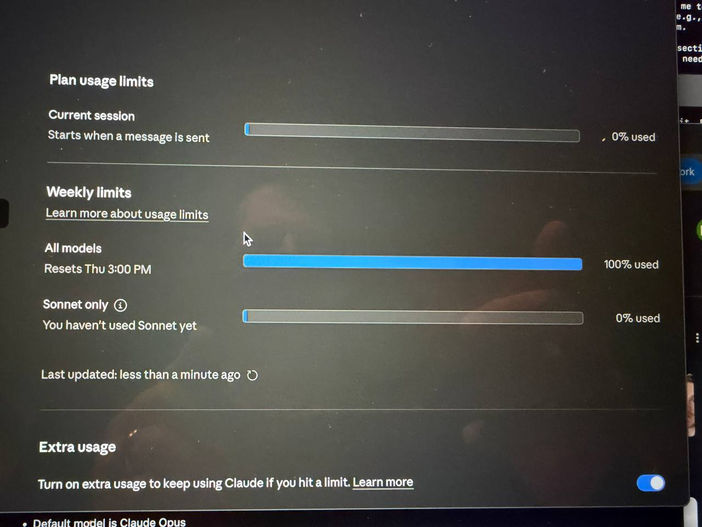

Advancing Freedom Tech.
A living publication of Alex’s essays, talks, books, and interviews.


Bio
Who is Alex Gladstein?
Alex Gladstein is Chief Strategy Officer at the Human Rights Foundation. He writes and speaks globally about human rights, free expression, and how open technologies like Bitcoin can protect civil liberties. He is the author of Check Your Financial Privilege and co-author of Hidden Repression, and his work focuses on helping people and institutions understand censorship resistance, financial freedom, and freedom technology.
Featured Work
Featured Work

“What if anyone, anywhere, could send or receive value without permission?”
“Freedom technology helps peaceful people coordinate without gatekeepers.”
“Open monetary networks are becoming civil society infrastructure.”
— Alex Gladstein
Latest
Archive Preview
- 2026-02TalkOn Freedom Tech and Civil Society
- 2026-01EssayBuilding Open Monetary Rails
- 2025-12PodcastPrivacy, Dissent, and Financial Rights